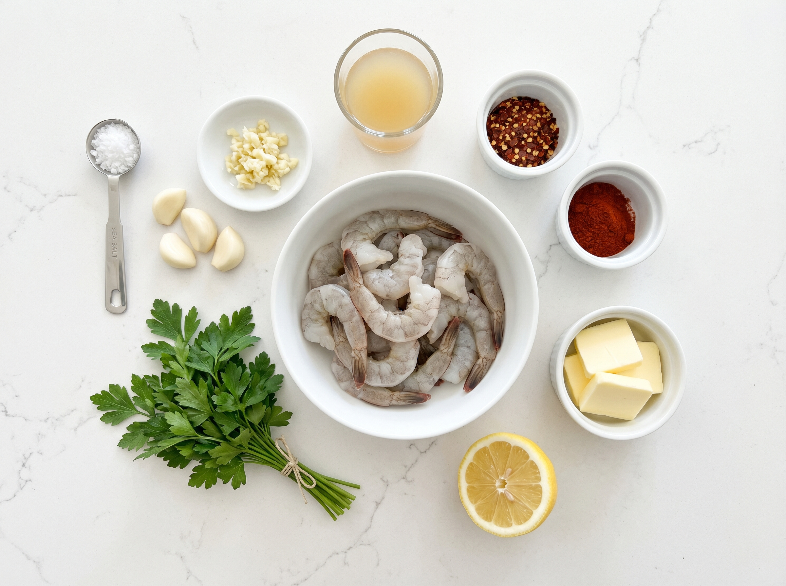
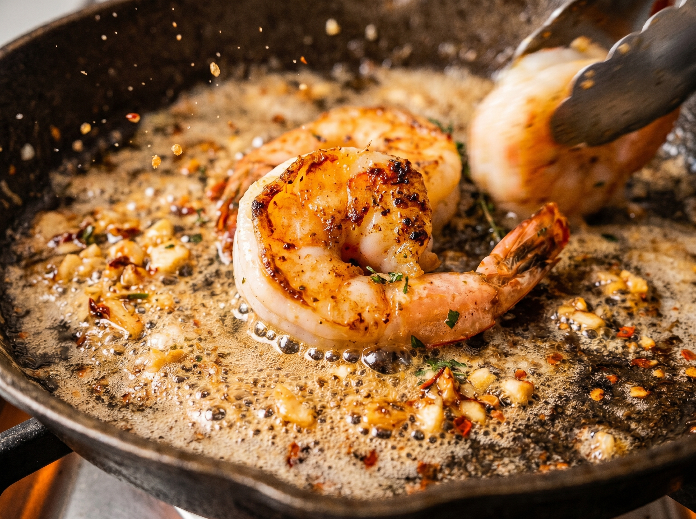
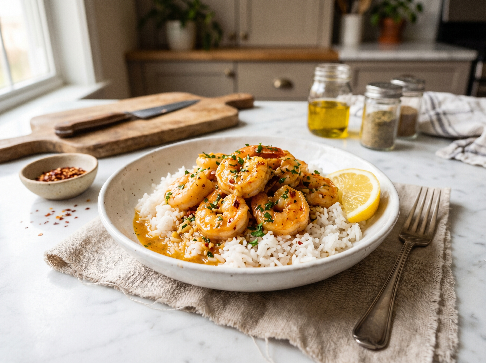

This spicy garlic butter shrimp is the recipe I reach for when I need dinner on the table in 15 minutes but refuse to sacrifice flavor. Juicy, perfectly seared shrimp tossed in a bold, garlicky butter sauce with a real kick of heat — this is the kind of dish that makes people think you spent an hour in the kitchen.
The secret is cooking the shrimp in two stages: sear them hard in olive oil first so they get that golden crust, then build the garlic butter sauce in the same pan so every last bit of flavor gets incorporated. The whole thing takes 10 minutes of actual cooking time, and the sauce is so good you'll want to eat it with a spoon.
Why You'll Love This Recipe
- 15 minutes start to finish — faster than delivery
- One pan, no mess — everything cooks in a single skillet
- Bold, restaurant-quality flavor — garlic, butter, heat, and lemon
- Adjustable heat level — mild to fiery, you control it
- Works with any side — rice, pasta, bread, or low-carb
Choosing the Right Shrimp
The best shrimp for this recipe is large (21–25 count) or jumbo (16–20 count), peeled and deveined. Here's where to find great shrimp across the US:
- Costco / Sam's Club — their frozen wild-caught shrimp bags are exceptional quality and value. Buy a 2 lb bag and keep it in the freezer for any given Tuesday.
- Trader Joe's — their frozen Argentine red shrimp are a cult favorite. Sweeter and meatier than standard shrimp, they're incredible in this recipe.
- Whole Foods — fresh Gulf shrimp at the seafood counter when in season (spring through fall) is hard to beat.
- Kroger / Publix / any major grocery — look for US wild-caught Gulf shrimp or Gulf white shrimp at the seafood counter.
Fresh vs. frozen: Most "fresh" shrimp at the supermarket counter was previously frozen and thawed. Buying frozen and thawing yourself is often fresher. For this recipe, both work identically — just make sure the shrimp are completely dry before they hit the pan.
About the Garlic Butter Sauce
This sauce is deceptively simple and completely addictive:
- Butter — unsalted, so you control the salt. Four tablespoons sounds like a lot until you taste it. Use real butter, not margarine.
- Garlic — six cloves, freshly minced. This is a garlic butter shrimp recipe; don't hold back. Jarred minced garlic won't give you the same result — the flavor is muted and the texture is wrong.
- Red pepper flakes — the primary heat source. Standard grocery store red pepper flakes (McCormick or store brand) work perfectly. For more intense heat, try Calabrian chile flakes.
- Smoked paprika — adds depth and a subtle smokiness that rounds out the heat. Regular sweet paprika works too, but smoked is better.
- Lemon juice — fresh squeezed. The brightness cuts through the butter and balances the heat. Don't skip this step.
Spicy Garlic Butter Shrimp
Juicy shrimp seared golden then tossed in a bold, buttery garlic sauce with red pepper heat and a squeeze of fresh lemon. One pan. Fifteen minutes. Zero regrets.
Ingredients

Shrimp
Garlic Butter Sauce
Garnish & Serving
Instructions
-
1
Prep the shrimp. Pat shrimp completely dry with paper towels — this is the most important step for a good sear. Any moisture on the surface will cause steaming instead of browning. Season with smoked paprika, cayenne, salt, and black pepper. Toss to coat evenly.
-
2
Sear the shrimp. Heat olive oil in a large skillet over medium-high heat until shimmering and hot. Add shrimp in a single layer — work in batches if needed, do not crowd the pan. Sear 1–2 minutes per side until pink and just barely opaque. They should be in a loose C shape, not a tight O. Transfer to a plate and set aside.
-
3
Build the garlic butter sauce. Reduce heat to medium. Add butter directly to the same pan — don't wipe it out, all those shrimp bits are pure flavor. Once melted and foaming, add minced garlic and red pepper flakes. Cook, stirring constantly, for 60–90 seconds until fragrant and just turning golden. Watch carefully — garlic goes from golden to bitter in seconds.
-
4
Finish and toss. Return the shrimp to the pan. Add lemon juice. Toss everything together over medium heat for 30 seconds, making sure every shrimp gets completely coated in the sauce. Remove from heat immediately — shrimp overcook fast.
-
5
Serve immediately. Transfer to a serving platter or individual plates. Spoon every drop of the pan sauce over the top. Garnish generously with fresh chopped parsley. Serve with lemon wedges and your chosen side — crusty bread to mop up the sauce is highly encouraged.

Keys to Perfect Spicy Garlic Butter Shrimp
- DRY your shrimp. Water on the surface = steam, not sear. Paper towels, both sides, press firmly.
- HOT pan before the shrimp go in. The oil should be shimmering and almost smoking. A lukewarm pan produces pale, rubbery shrimp.
- Don't crowd the pan. Shrimp need space to sear properly. If they're touching, they'll steam. Cook in two batches if needed — it's worth the extra two minutes.
- Pull shrimp early. They finish cooking in the sauce. A loose C shape when you pull them means perfectly cooked. A tight O means overdone.
- Don't walk away from the garlic. Sixty to ninety seconds at medium heat is all it takes. Burnt garlic ruins the entire sauce — watch it like a hawk.
Variations
- Mild version: Skip the cayenne and reduce red pepper flakes to ¼ teaspoon. Add a pinch of sweet paprika instead for color without the heat.
- Extra fiery: Double the red pepper flakes and add 1 sliced fresh jalapeño or serrano pepper along with the garlic.
- Lemon herb: Add 1 teaspoon fresh thyme leaves and the zest of one lemon along with the juice for a brighter, more herb-forward version.
- Creamy version: After tossing in the shrimp, stir in 3 tablespoons of heavy cream and let it bubble for 30 seconds for a rich, saucy variation.
- Pasta version: Toss with 12 oz cooked linguine and a splash of pasta water to turn this into a full weeknight pasta dinner.
- Gluten-free: This recipe is naturally gluten-free as written — no substitutions needed.
Serving Suggestions

The garlic butter sauce is the real star here — choose sides that let you enjoy every drop:
- Crusty bread or garlic bread — the best possible vehicle for scooping up the sauce directly from the pan
- Steamed jasmine or long-grain white rice — the sauce soaks into the rice beautifully
- Linguine or angel hair pasta — toss the shrimp and sauce directly with the cooked pasta for a 20-minute pasta dinner
- Cauliflower rice or zucchini noodles — for a lighter, low-carb plate that still lets the sauce shine
- Simple green salad — the hot shrimp and sauce slightly wilt the greens, which is a great contrast
Storage & Reheating
Refrigerator
Store leftovers in an airtight container for up to 2 days. The shrimp firm up a bit on storage — that's normal.
Freezer
Cooked shrimp can be frozen for up to 1 month, though the texture softens slightly. Thaw overnight in the fridge.
Reheat
Reheat gently in a skillet over low heat with a small knob of butter for 2–3 minutes. Avoid the microwave — it makes shrimp rubbery in seconds.
Frequently Asked Questions
Can I use frozen shrimp for this recipe?
Yes — frozen shrimp works beautifully here. Thaw overnight in the fridge or place in a colander under cold running water for about 5 minutes. The most important step is patting them VERY dry before cooking. Any surface moisture will cause the shrimp to steam instead of sear, which means no golden crust and a watery sauce.
How do I know when shrimp are cooked through?
Shrimp cook extremely fast — usually 1–2 minutes per side. They're done when they turn pink and opaque and curl into a loose C shape. A tight O shape means they're overcooked. If your shrimp are in a C, pull them immediately. Overcooked shrimp are rubbery, so err on the side of slightly underdone — they'll finish cooking in the hot butter sauce.
What size shrimp should I buy?
Large shrimp (21–25 count per pound) are ideal for this recipe. They're big enough to get a good sear without overcooking the center, and they hold up well in the bold sauce. Jumbo shrimp (16–20 count) also work — just add 30–60 seconds of cook time. Avoid small or medium shrimp here; they'll overcook before getting any color.
How do I control the spice level?
This recipe is built for a medium-high heat level. To dial it back: use ½ teaspoon red pepper flakes instead of a full teaspoon and skip the cayenne entirely. For a mild version, swap red pepper flakes for sweet paprika. To crank it up: add ½ teaspoon cayenne on top of the full teaspoon of flakes, or add sliced fresh jalapeño with the garlic.
What do I serve with spicy garlic butter shrimp?
The garlic butter sauce is the star, so you want something that can soak it up. Crusty bread or garlic bread is the absolute best pairing — just dunk it directly in the pan. Steamed white rice, pasta (linguine or angel hair), or cauliflower rice all work equally well. For a lighter meal, serve over a simple arugula salad — the heat from the shrimp wilts it beautifully.
Nutrition Information
Per serving (approximately 6 oz shrimp with sauce). Values are estimates.
| Nutrient | Amount per Serving |
|---|---|
| Calories | 280 kcal |
| Total Fat | 17g |
| Saturated Fat | 8g |
| Cholesterol | 215mg |
| Protein | 29g |
| Carbohydrates | 3g |
| Sugar | 0g |
| Sodium | 620mg |
You Might Also Love


Did You Try These Shrimp?
What did you serve them with? Leave a comment below — I love hearing about the combinations people discover. And if you found this recipe helpful, pinning it on Pinterest helps other home cooks find it too!
📌 Save This Recipe on Pinterest